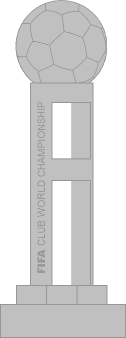
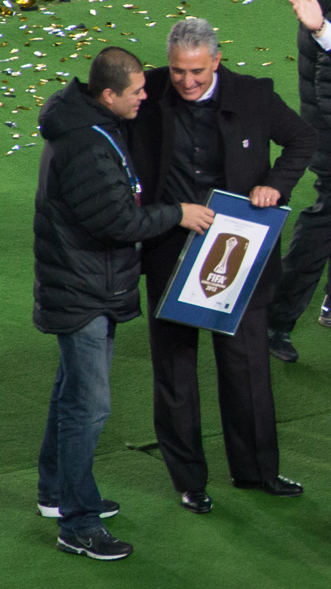
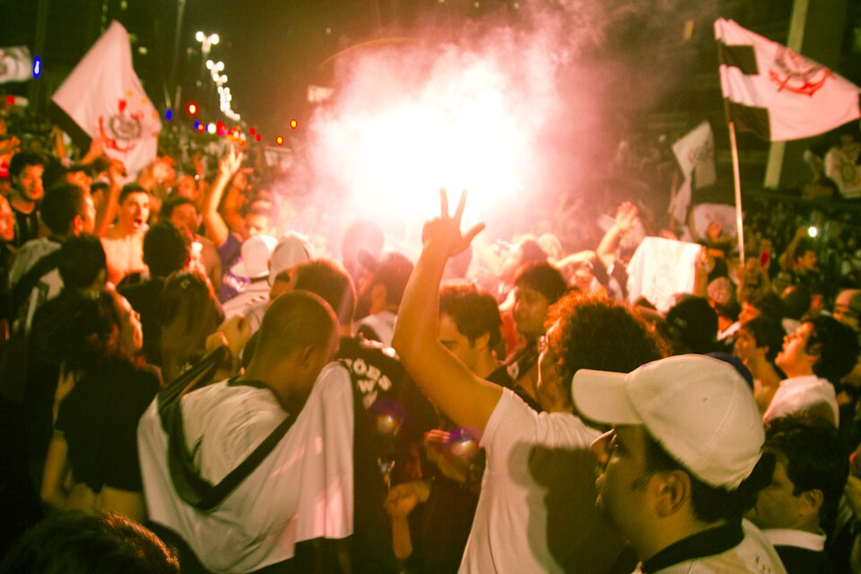
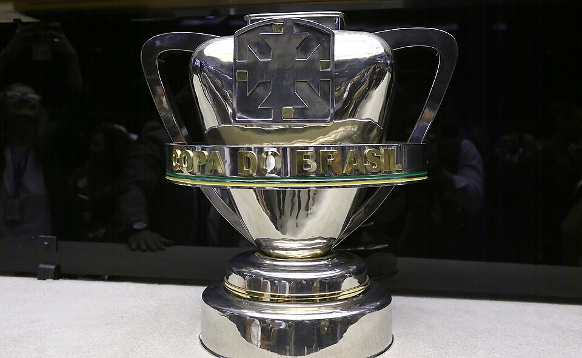
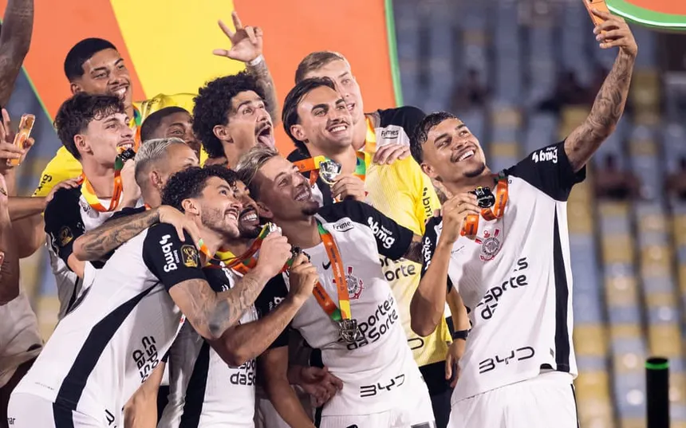
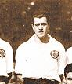

Início História Títulos Jogadores Torcida
O campeão dos campeões!


Em 2000 venceu o Vasco no Maracanã. Em 2012 bateu o Chelsea por 1 a 0 no Japão, gol de Guerrero.

Campeão invicto, vencendo o Boca Juniors na final no Pacaembu, com dois gols de Emerson Sheik.


Tetracampeão da Copa do Brasil!
Heptacampeão brasileiro: 1990, 1998, 1999, 2005, 2011, 2015 e 2017.

Mais de 30 títulos. O maior campeão paulista! Na foto, o time campeão de 1930.
Venceu o São Paulo nos dois jogos da final.
Sport Club Corinthians Paulista - desde 1910